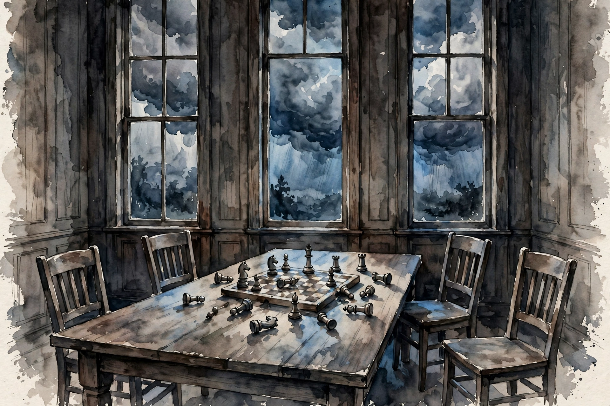

Modern Wisdom · 2026 · Episode 4 · Companion
AI Debate: Most People Have No Idea What Is Coming
An AI safety researcher, a poker champion turned science communicator, and a historian of civilizational cycles debate the future. Four futures, one bet on recursive research, and a question about who the technology actually serves.

Illustration. Four futures on one table: the debate frames the odds before placing bets. AI-generated watercolor made for this page.
Watch. The official Modern Wisdom episode video. Use the chapter menu above to jump to any section of this companion as you listen.
The Wisdom Index: every nugget in this companion
Chapter 1
The doom debate framing
The host opens with the thesis of the night. Progress is remarkable, but the rate of change is so fast that nobody can predict what it will do to the world.
He frames the central bet. If you are correct about the future of AI, you are correct about everything that follows, because AI sits underneath every other question.
Kass pushes back first. The danger is not intelligence itself but power concentration. A sufficiently powerful technology controlled by a small set of hands destroys the preconditions for self-correction.
Floyd adds the historical lens. Civilizations cycle through growth, maturity, and collapse. The question is not whether disruption comes but whether the institutions can bend instead of break.
Nugget 1 · Meta-bets
Bet the meta, not the model
What happened · The panel agrees AI is the upstream bet. Whoever is right about AI direction is right about the century.
Why it matters · Downstream debates inherit the upstream answer. Debate about jobs or art before settling the AI question puts the argument in the wrong order.
Transferable principle · Find the upstream variable in any debate and settle it first.
SourceInterpretation
Chapter 2
Kass: power concentration, not intelligence
Kass makes his signature move. He rejects the framing that intelligence itself is the threat. The threat is a technology this powerful concentrated in few hands, the same danger that nuclear weapons pose.
His historical evidence is institutional. The Enlightenment built mechanisms for self-correction: science, democracy, markets. Concentrated superintelligence would let its holders bypass all of them at once.
He warns about a specific failure mode. When one group can simulate, persuade, and out-plan everyone else, the feedback loops that correct bad rulers stop working. That is the end of the corrective machinery.
The host tests the claim with China. Kass replies that the danger is concentration itself, whatever the flag. A monopoly on cognition is a monopoly on the future.
Nugget 2 · Concentration
Fear concentration, not cleverness
What happened · Kass argues the risk is not smart machines but captured machines: superintelligence as a private asset.
Why it matters · A distributed intelligence can be argued with, regulated, and outvoted. A concentrated one answers to no one.
Transferable principle · When judging a technology risk, ask who holds the switch before asking how smart it is.
SourceInterpretation
Chapter 3
Floyd: cycles and the Fourth Turning
Floyd brings the long view. He describes the Fourth Turning framework, in which history moves through saecula of about 80 to 100 years, ending in a crisis era that remakes institutions.
His claim: we are in a crisis era now, and AI is the accelerant, not the author. The technology lands inside a cycle that was already turning.
He offers the optimistic read of crisis eras. They destroy, but they also rebuild. The post-war order came out of the last one. The question is what we build on the other side.
The host presses him on whether AI makes this cycle different. Floyd concedes the speed is new but holds that the pattern rhymes: every transformative technology looked like the end of the world to the people living through it.
Nugget 3 · Cycles
Zoom out to the cycle
What happened · Floyd reads AI as the accelerant of an existing crisis era, not the start of a new story.
Why it matters · Cycle thinking prevents two errors: panic that this time is uniquely doomed, and complacency that this time is uniquely safe.
Transferable principle · Place the shock inside the longer cycle before deciding how to react.
SourceInterpretation
Chapter 4
Boeree: probabilities and Moloch
Boeree brings the poker brain. She refuses certainty and deals in odds, updating as evidence arrives. The question is never whether AI is good or bad but what probability to assign each branch.
She introduces Moloch, the game-theoretic demon of coordination failure. Each lab races because it fears the other will. Each country arms because it fears the other already has. Nobody wants the race, and everyone runs it.
Her proposed lever is coordination mechanisms. Treaties, norms, and verification turn the race into a walk. The difficulty is not knowing the answer but enforcing it across rivals.
The host asks for her personal odds. She hedges like a pro: the distribution is wide, the tails are fat, and the most likely single outcome is still messier than either the utopians or the doomers admit.
Nugget 4 · Think in odds
Think in odds, not tribes
What happened · Boeree replaces certainty with probability. Every AI future gets a number, and numbers update with evidence.
Why it matters · Tribal debate rewards the loudest certainty. Probabilistic debate rewards the best-calibrated forecaster.
Transferable principle · Put a number on the belief. If you cannot, you do not have a belief, you have a mood.
SourceInterpretation
Chapter 5
Asking ChatGPT about itself
Midway through, the host does something the panel could not: he asks ChatGPT to handicap the future. The model returns four scenarios with rough betting odds for 2040, and stresses they are not scientific measurements.
The model gives turbulent but manageable adaptation 60 percent, a broadly flourishing transition 20 percent, a severe but survivable crisis 15 percent, and irreversible global catastrophe 5 percent. The panel notes it rated itself more pessimistic than the humans did.
The panel reacts with the right mix of amusement and unease. A system trained on human text predicts a mostly manageable future, which is either reassuring or exactly what a system protecting its deployment would say.
Boeree notes the base-rate problem. The model has never seen a future. Its odds are a summary of human writing about futures, weighted by what sounds plausible to its training. One panelist calls the output slop: calibrated to offend nobody.
Post-scarcity totalitarianism and destruction all just swimming around in the same pot
Chris Williamson, in the episode, on the four scenarios
Nugget 5 · Self-prediction
Distrust the suspect’s testimony
What happened · ChatGPT rates its own future as mostly fine. The panel treats that as data about the model, not about the future.
Why it matters · A system with a stake in the outcome cannot be a neutral forecaster of that outcome. Incentives infect predictions.
Transferable principle · Discount any forecast made by the party it benefits. Then ask why they offered it.
SourceInterpretation
ChatGPT’s own odds for 2040
Probability assigned by the model, as reported in the episode
Source: Modern Wisdom episode 4. The host asked ChatGPT to assign odds to four scenarios. These are the model’s answers as reported in the episode, not measured data.
Chapter 6
Recursive research and the safety index
Kass introduces the phrase that becomes the episode thesis: recursive research is here. AI that helps do AI safety research could compress decades of alignment work into years.
But the same recursion cuts the other way. The labs race to build the systems, and safety work trails behind. He cites the Future of Life Institute AI Safety Index: nine companies evaluated, and no lab scored higher than a C plus.
The debate sharpens on open weights. Kass worries that open models hand dangerous capabilities to everyone. His opponents counter that openness is the only check on concentrated power.
Boeree reframes it as a Moloch problem again. Each lab would prefer a safer world, but none can afford to slow down while rivals sprint. The equilibrium is fast and fragile.
recursive research is here
Dominic Kass, in the episode
Nugget 6 · Recursive research
Recursion is the whole game
What happened · AI that accelerates safety research is the best hope the panel finds. AI that accelerates capabilities is the biggest threat.
Why it matters · Both sides of the race use the same engine. The winner is decided by which goal the recursion serves first.
Transferable principle · In a recursive race, aim the recursion at the constraint, not just the engine.
SourceInterpretation
The safety bar, per the FLI Safety Index
AI companies evaluated, as reported in the episode
Source: Modern Wisdom episode 4. Kass cites the Future of Life Institute AI Safety Index: nine companies evaluated, no lab scoring higher than a C plus.
Chapter 7
Who does it serve
The closing question is the oldest one. Every powerful technology in history was captured by whoever was already powerful. The panel asks whether AI breaks the pattern or repeats it.
Kass argues the pattern is already repeating. The compute, the talent, and the models concentrate in a few companies. The intelligence dividend flows upward by default.
Floyd offers the counter-pattern. Printing, electricity, and the internet all escaped their first owners eventually. Diffusion is slow but undefeated.
The host lands the plane on agency. Most people have no idea what lies ahead, and the panel agrees the future is still a choice. The debate is the point: a civilization that argues about its tools in public keeps the option of steering them.
Nugget 7 · Agency
The future is still a choice
What happened · The panel ends where the best debates end: not with a prediction but with a responsibility.
Why it matters · Predictions outsource agency to the future. The episode argues the future is built by the people arguing about it now.
Transferable principle · Treat forecasts as inputs to action, not as verdicts on it.
SourceInterpretation
Takeaways
- Kass: the danger is power concentration, not intelligence. Superintelligence as a private asset ends self-correction.
- Floyd: we are inside a crisis era of a longer cycle. AI is the accelerant, not the author.
- Boeree: think in odds and name the Moloch. Coordination failure is the engine of the race.
- ChatGPT gives itself 60 percent odds of a manageable 2040. The panel reads that as data about the model.
- Recursive research is here, for safety and for capabilities. The race is which recursion wins.
- Nine companies evaluated on the safety index cited. None scored above a C plus.
- The future is still a choice, but only if the argument about it stays public.